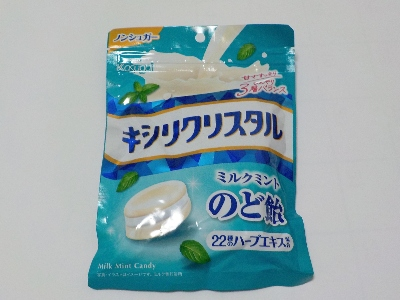
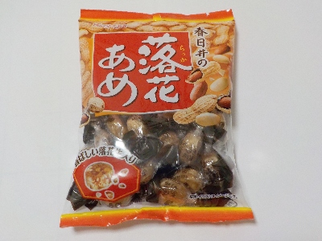
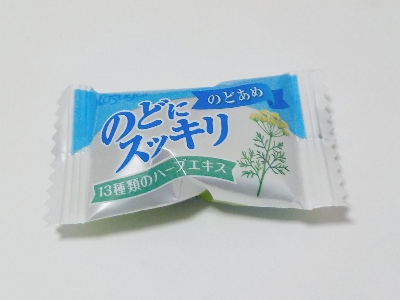
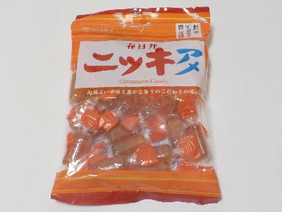
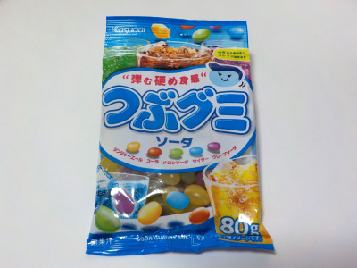
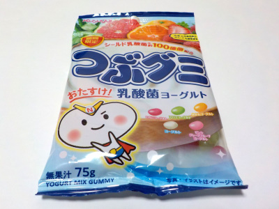
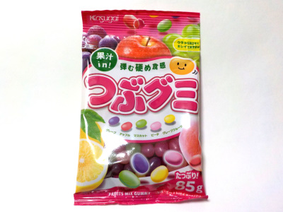

愛知県名古屋市西区花の木1丁目3番14号
更新日 : 2026/03/12

有名な飴ですが、今まで好んで食べていませんでした。
キシリトールじゃなくて砂糖で良くない？同じメーカーの「のどにスッキリのどあめ」で良くない？これちょっと値段が高くない？って思っていました。
あと糖類０とは書いてあるけど、糖質０じゃないんですよね。とは思いつつも、最近砂糖の量がなんか気になっています。
ちょっとでも砂糖を減らそうと思いキシリクリスタルを買いました。お値段も少し高いので、飴玉なめる量も少し減らそうと思っています。
67g168円で購入。
更新日 : 2026/03/12

砂糖の入った飴は空腹時に食べるとちょっと気がまぎれますが、そこにピーナッツが入ので満足度が上がります。
実際ピーナッツはポリポリ食べているので、お腹に貯まって当然なんですが飴玉1個で効果が期待できるので好きです。
134g 158円でした。ちょっと匂いが強いかな。
更新日 : 2024/12/21

ミルクとハーブの組み合わせが不思議な味の飴です。
牛乳にハーブを入れるメニューはありますが、リアルにめったに飲まないです。でも飴だったらあんまり抵抗なくなめれます。
この飴のブレンドが素晴らしいんでしょうね。
更新日 : 2024/09/26

ニッキの辛みもあるんですが、砂糖の甘さがしっかりあるのでニッキ味がマイルドな感じがしました。
マイルドなぶん食べやすいですね。長四角い形状なので口の中で溶けやすい気がしました。シンプルなニッキと砂糖味が広がって美味しいです。
更新日 : 2023/08/22

ジンジャエール、コーラ、メロンソーダ、サイダー、グレープソーダ味が入っています。
ジンジャエールって定番的な商品になりましたね。グミにまでなったんだ。
私はこの中だとコーラ味が一番好きです。
更新日 : 2023/02/27

通常のつぶグミよりも量が少ないです。その代わりに乳酸菌が入っています。
私は乳酸菌よりも量が多い方が好きだなって思いました。
このつぶグミはヨーグルト風味になっているので、果物味が少しぼんやりしていました。
期間限定商品で、いつもと違う味の商品が出るのはいいですね。次回の限定商品が楽しみです。
更新日 : 2023/01/27

味も値段も大好きなグミです。どうしてこのグミは安くて美味しいんだろうと不思議に思っています。
私は気分転換に一粒づつ食べるんですが、量が多いのでとても長持ちします。
【おいしいものを食べよう。】【たくさん寝よう。】
【ソロ活をしよう!】【季節感のあることをしよう。】【動画視聴はほどほどに。】【当サイトの全てのコンテンツは無断転載禁止です。】